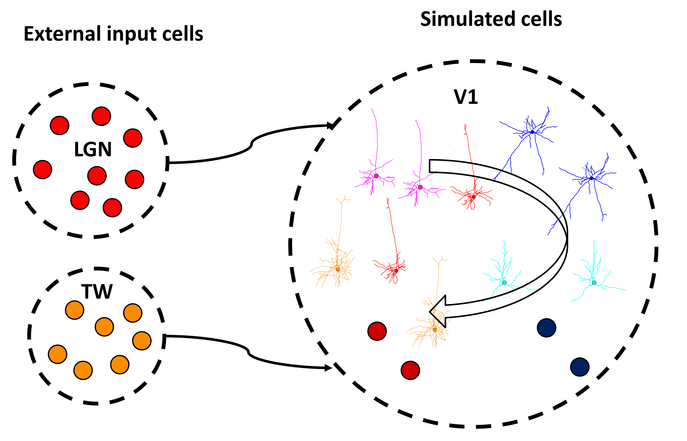

Simulating example networks with BioNet#
To get started with running simulations with BioNet, we recommend running network examples provided in the directory examples/simulators/bionet:
/14cells : a network of 14 cells receiving an external input.
/450cells : a network of 450 cells receiving an external input
Working through the sections below, you will learn about the contents of folders in each example and how to use them to run a simulation.
Configuring simulation#
All the files listed below describing the network are listed in the configuration file config.json to instruct BioNet where to look for files describing the network. Please note that all directory and file names can be adjusted by users as they wish, as long as those names are reflected in the config file. Additionally, the configuration file includes simulation parameters (e.g. duration of simulation and time step, etc).
Please refer to the configuration file documentation for details.
Model description#
The directory network contains files that describe the parameters of the cells and their connections.
Cells in modeled networks may be generally categorized as: 1) the simulated cells for which dynamics is explicitly simulated using NEURON and 2) external input cells for which spiking dynamics is not simulated explicitly, but instead loaded from files. The external input cells can influence the simulated cells, but not vice versa. Thus, such an abstraction is convenient for simulating feedforward inputs.
The example networks include the simulated cells from the primary mouse visual cortex (V1) receiving external inputs from the Lateral Geniculate Nucleu (LGN) and also background input in a form of a Travelling Wave (TW) as shown in Figure 1 below:
{kind=link}
Figure 1. Cells in the example network. The simulated network (V1) includes 14 cells: 10 biophysically detailed (depicted as morphological reconstructions) and 4 Leaky Integrate-and-fire (LIF) (showed as circles). Simulated V1 cells have recurrent connections (hollow arrows) as well as receive feedforward external input (solid arrows) in the form of spikes from the LGN (red circles) and TW cells (dark orange circles).
A network can be viewed as a graph. The description of a graph needs to specify the properties of the nodes (cells) and edges (connections). In BioNet (and more generally, in BMTK), each node (edge) belongs to a particular node (edge) type, thus possessing all the properties of that type, but also possessing properties specific to that individual node (edge) instance. Thus, the properties of nodes are described using two files: node_file and node_type_file. Similarly, edges are described using two files: edges_file, edge_types_file. For node_type_file and edge_type_file we use csv format, whereas for node_file and edge_file — HDF5 format.
Nodes files:
Cells |
Nodes |
Node types |
|---|---|---|
V1 cells |
v1_nodes.h5 |
v1_node_types.csv |
LGN cells |
lgn_nodes.h5 |
lgn_node_types.csv |
TW cells |
tw_nodes.h5 |
tw_node_types.csv |
Edges files:
Connections |
Edges |
Edge types |
|---|---|---|
V1 -> V1 connections |
v1_v1_edges.h5 |
v1_v1_edge_types.csv |
LGN -> V1 connections |
lgn_v1_edges.h5 |
lgn_v1_edge_types.csv |
TW->V1 connections |
tw_v1_edges.h5 |
tw_v1_edge_types.csv |
Please refer to the network file format documentation for details.
The spikes times of external cells are precomputed and provided in the directory examples/simulator/NWB_files.
Each network utilizes models of individual cells, synapses, and recording electrodes defined in the examples/simulators/bionet/components/mechanisms directory.
The paths to each of these files and directories are specified in the configuration file (see above).
Running simulation#
Running simulations requires the following Python scripts
run_bionet.py : main python script which calls BioNet to run the simulation
set_cell_params.py: module setting properties of cells
set_syn_params.py: module setting properties of synapses
set_weights.py : modules allowing to set parameter-dependent connection weights
The example networks use biophysically-detailed models of individual cells and require additional NEURON channel mechanisms describing the dynamics of ionic channels. To compile these NEURON mechanisms go to the subdirectory examples/simulators/bionet/components/mechanisms and run the NEURON command:
nrnivmodl modfiles/
From the directory of the network example you can simulate a single core by executing the main python script with a configuration file as a command-line argument, as follows:
python run_bionet.py config.json
Or to run in parallel with MPI on $NCORES CPUs:
mpirun -np $NCORES nrniv -mpi -python run_bionet config.json
In either case, the main script will load the configuration file containing paths to files describing the network and will load and simulate the network.
When the simulation is finished, you will see a message “Simulation completed”.
BioNet allows saving simulation output in blocks while the simulation is still running, giving users the ability to check and analyze the intermediate output. During the run you will see some output reporting on the progress of a simulation as follows:
When the simulation is completed you will see a message “Simulation completed”.
Simulation output#
The output directory includes:
spikes.h5 : HDF5 file containing the spikes of the simulated cells.
cellvars/N.h5 : HDF5 file containing time series recordings of somatic variables (e.g., somatic voltage, [Ca++]) for cell with node_id=N (there might be multiple such files, up to the number of cells in the model, or none at all, depending on the settings in the simulation config).
config.json : a copy of configuration for record-keeping
log.txt : run log file including time-stamped information about the progress of a simulation.
Upon completion you may run the script plot_rasters.py to plot spike rasters of external (Figure 2) as well as simulated (Figure 3) cells:
python plot_rasters.py
{kind=link}
Figure 2. Spike rasters of the external input cells: LGN (green) and TW (firebrick).
{kind=link}
Figure 3. Spike raster of the simulated (V1) cells.
Simulating your network models#
To run simulations of your network with BioNet, you will first need to provide a pre-built network in the format understood by BioNet. We recommend using BMTK’s network builder api, but you may also use your scripts or a third-party tool to build a network. As a start, we suggest modifying the existing network examples as a quick way of customizing network models and then building your own model following builder examples tutorial.
When you have your custom model built, you will need to specify in your configuration file the paths to the network, components as well as simulation run parameters.
Just as in the above examples, your run folder should include Python modules: set_cell_params.py, set_syn_params.py, set_weights.py specifying how models of cells, synapses, and connection weights are created, as well as the main python script.
When running different simulations you will rarely need to modify the main Python script running BioNet. Instead, you will commonly need to modify paths to network files or run parameters in the configuration file to instruct BioNet on which model to run and how to run it. Please refer to the configuration file documentation for details.